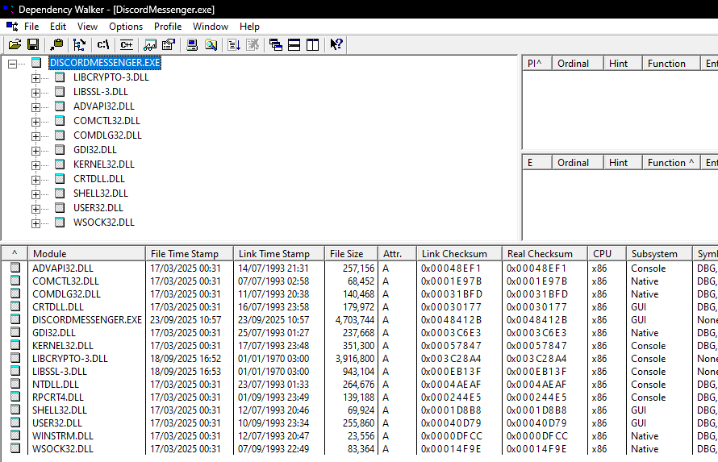
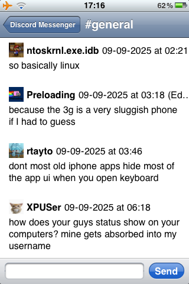

Discord on Windows NT 3.1, part 2
See the original article from March 2025 here.
As you may know, Discord Messenger (my Discord client project) was ported to Windows NT 3.1 a while ago. However, several developments have happened since then.
The compiler toolchain I use to compile Discord Messenger for archaic Windows versions is called Mingw-w64. Previously I had been using a mix of MinGW 6.3.0 (for DiscordMessenger.exe), and Mingw-w64 for OpenSSL.
This changed a few weeks ago when I decided to try to modify the MinGW C runtime instead, to be compatible with Windows NT 3.1, instead of circumnavigating its compatibility problems by wrapping Kernel32 with my own DLL.
Making my own compiler toolchain to target Windows NT 3.1
Yes, I sat there and compiled GCC and friends (several times actually!) just to get this to work. But when it finally did, it was a spectacular sight.
First Steps
To get started compiling the mingw-w64 toolchain from scratch, I firstly had to download all of the sources. I do not recommend directly downloading from GNU servers unless you want to be sure about what you are downloading, because they're ungodly slow. Instead, download a mirror, and simply compare the hashes/ signatures with the ones on the official GNU servers. GCC's source code archive ended up being about 500 MB in size (compressed), so prepare to wait a long time or use a faster mirror.
The versions I used: - Binutils 2.4.0 - GCC 13.1.0 - Mingw-w64 v13.0.0
Now, I have made two diff files about what to modify in both GCC and Mingw-w64. This is not meant to be a tutorial, though, just my recollection of the experience. For a tutorial on how to replicate my results, see: my Pentium toolchain build guide on the Discord Messenger repo.
GCC
In order to build GCC, I had to install the mingw-w64 headers, and then configure it so it compiles for the Pentium architecture (instead of i686 like the package manager version).
Mingw-w64 runtime
The Mingw-w64 runtime was a bit more complicated. I had to change several things.
First, I had to edit Makefile.am and Makefile.in from mingw-w64-crt so that instead of passing a _WIN32_WINNT
version of 0xF00 (what?!) and a __MSVCRT_VERSION__ of 0x600, it uses a _WIN32_WINNT of 0x500
(Windows 2000), and an __MSVCRT_VERSION__ of 0x000 (corresponding to CRTDLL).
Why did I need to target CRTDLL instead of MSVCRT? The reason why is because Windows NT 3.1 does not come with MSVCRT, instead it comes with its more limited cousin, CRTDLL.dll. There are some missing APIs that MSVCRT implements and CRTDLL doesn't, which I will go through later.
I had to edit libsrc/dloadhelper.c to remove the entire file if _WIN32_WINNT < 0x602 (Windows 8). Those
APIs did not exist in Windows 8 and I have no intention of using them.
I also had to implement calls such as _wstat, _lseeki64 and _telli64, because they were not implemented
in CRTDLL. However, I ended up disabling Unicode dirent handling functions such as _wfullpath, because a
recreation of those would take longer than I've been willing to invest in this project. The consequence is
that I can't use those APIs in Discord Messenger, or other applications I compile with this toolchain, but I
think this is worth it.
Finally, I had to remove the static linking to GetSystemTimeAsFileTime, opting to instead use GetProcAddress
to get its address, and if it doesn't exist, then just call my emulation function.
These are all of the changes I had to make to the mingw-w64 runtime for it to build for Windows NT 3.1.
One more thing, you have to be real patient building the mingw-w64 CRT, as you have to do serial compilation
(make with 1 job), because there is allegedly a race condition which causes some files not to be found. So,
watch out for that. I was patient enough to wait the entire ~30 minutes or so for it to compile.
Libgcc
As it turns out I didn't disable gthreads (or more likely I couldn't), so I had to hack off some imports so that the resulting program would run on NT 3.1:
__gthread_equalnow checks the handles and not their thread ID, becauseGetThreadId()wasn't implemented in NT 3.1.__gthread_mutex_trylockand__gthread_recursive_mutex_trylockhad to be disabled (the try-lock fails every time), because there is noTryEnterCriticalSectionon NT 3.1 (and I wouldn't dare try to hack one to work, because such actions are bound to be finnicky; Windows tends to change internal structures such asCRITICAL_SECTION)
Libstdc++
The C++ standard library had a few changes applied to it too, mostly related to the C++17 file system code.
On Windows, the C++17 filesystem implementation assumes Unicode characters for file paths and more, according
to _GLIBCXX_FILESYSTEM_IS_WINDOWS. I had to switch to ANSI versions of APIs (GetFullPathNameA instead of
GetFullPathNameW for example), and change all occurrences of std::wstring (and std::wstring_view) to their
UTF-8 counterparts.
I also had to disable use of _rand_s, because it doesn't exist in CRTDLL.
One more thing: GetDiskFreeSpaceExA does not exist on Windows 95, so don't use the do_space function.
Missing _beginthreadex and _endthreadex`
As it turns out, there are two MSVCRT dependencies in DiscordMessenger and OpenSSL that I had missed:
_beginthreadex and _endthreadex. It is not as simple as calling CreateThread, and that's because there is
CRTDLL specific initialization that happens before your main function.
Simulating _beginthreadex in terms of _beginthread (CRT's old thread creation function) is also not trivial,
because the parameters differ. Let's look at the function prototypes:
uintptr_t _beginthread(
void( __cdecl *start_address )( void * ),
unsigned stack_size,
void *arglist
);
uintptr_t _beginthreadex(
void *security,
unsigned stack_size,
unsigned ( __stdcall *start_address )( void * ),
void *arglist,
unsigned initflag,
unsigned *thrdaddr
);
Pretty different, huh? Not only that, the return value is different too!
- With _beginthreadex, you get a full HANDLE that you can close (to detach the thread), wait on, etc. Also,
the arguments completely match up with the CreateThread Win32 function including the start address' call
convention.
- Meanwhile,
_beginthreadis considerably simpler, it doesn't take in any security parameters, or aninitflag, orthrdaddr, which is where the thread's identifier is stored. Thestart_addressalso takes in a different call convention (__cdeclinstead of__stdcall), and, the worst part, while the return value is still aHANDLE, it's different, in that theHANDLEactually goes away after the thread exits!
I had to do the following, to emulate _beginthreadex in terms of _beginthread:
Ignore the
securityandinitflagparameters. I do not use those.Use a custom entry function declared
__cdeclthat waits on an auto-reset event, which is signalled right before my implementation of_beginthreadexexits, to prevent the handle from being closed while the spawner thread duplicates the handle (to match with_beginthreadexsemantics).Call
GetCurrentThreadId()to also store the thread's ID inthrdaddr(if we weren't trying to target NT 3.1, I'd rather callGetThreadId(handle)).Check for any initialization errors during the thread's execution and abort safely if they occurred.
Discord Messenger runs! (Again!)
And why wouldn't it. Look at this clean dump from Dependency Viewer! (it doesn't run on Windows NT 3.1, but I have configured it to use the system paths for this version)

Standing on the shoulders of giants
Well, that giant is... me from a few months ago! But of course, all of my current work relies on my past research work, which was described in the 2025-03-30-discord-on-nt-3-1.html. Give that a read if you are interested in the history of Discord Messenger ports for some reason.
What about Win32s (again)?
Win32s compatibility is closer than ever actually. Of course, I still need to get rid of all thread usage,
but this will be more feasible at some point in the future, because I have decided to try making Discord Messenger
use libcurl and mbedtls in this PR.
Since I can use these libraries in non-blocking mode, I could theoretically integrate those into the main thread and actually get DM working on Win32s.
Unfortunately, I will not be the one to try doing the Win32s port, but you're free to if you can glean anything whatsoever from this article!
Additionally, some of the limitations still stand: - 16MB RAM limit, so you will need to unload channels sooner or load fewer images (or none at all!)
Global limit of about 65K handles
16-bit networking support is kind of bad
You're only going to be targeting 1 additional version of Windows, that being Windows 3.11 for Workgroups. Windows 3.1 and earlier do not have network support at all.
The only way you could conceivably run Discord Messenger on Win32s is if you integrate libcurl+mbedtls into the main thread (as opposed to running the networking and websockets in separate threads), and all the other Win32s limitations.
What's next?
I have several plans for the future:
The aforementioned switch to libcurl and MbedTLS (which will require me to port those libraries to archaic Windows), being performed in this PR
Switching to a homebrew JSON parser, being done in this PR, which is faster than
nlohmann::jsonAllowing multiwindowing, being done in this PR
I saw you mentioning Purplecord, what is it?
Purplecord is meant to be an iOS 3 Discord client. It is currently minimally usable, but slow on the iPhone 3G, and lacks support for basic features such as image attachments. It's in active development, though, and will be released open source soon.
The first two of the mentioned PRs (#205 and #206) actually pull work directly from Purplecord, because such work was downright necessary to create a good experience!
Here is a preview of Purplecord running on iOS 3 on my iPhone 3G: 
I will discuss the challenges I ran into while writing Purplecord in a future article.
In conclusion
Why am I doing this? For the fun of it, of course, but also because I am actually passionate about old computers! And I am especially satisfied when old computers do new things thought impossible because of the age gap.
Do not take my "age gap" comment out of context.